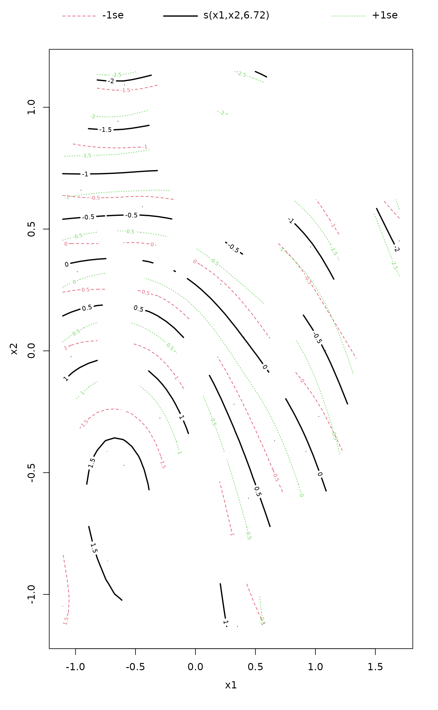
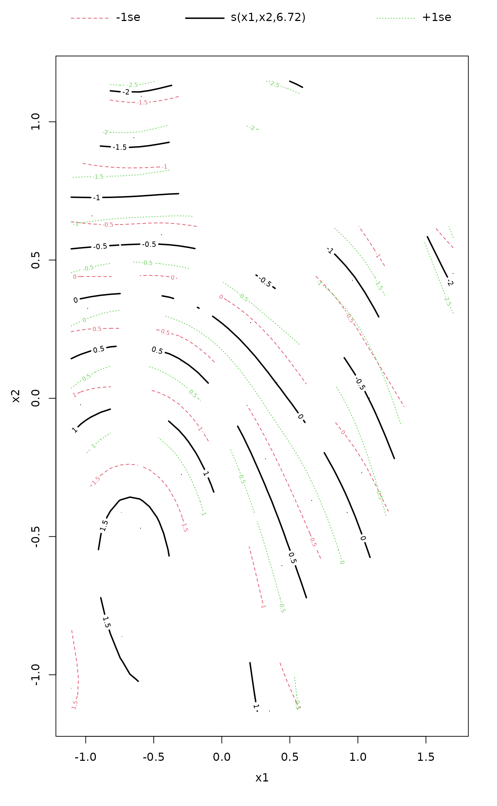

Fit and Plot Smooth Surfaces of Variables on Ordination.
ordisurf.RdFunction ordisurf fits a smooth surface for given variable and
plots the result on ordination diagram.
Usage
# Default S3 method
ordisurf(x, y, choices = c(1, 2), knots = 10,
family = "gaussian", col = "red", isotropic = TRUE,
thinplate = TRUE, bs = "tp", fx = FALSE, add = FALSE,
display = "sites", w, main, nlevels = 10, levels, npoints = 31,
labcex = 0.6, bubble = FALSE, cex = 1, select = TRUE, method = "REML",
gamma = 1, plot = TRUE, lwd.cl = par("lwd"), ...)
# S3 method for class 'formula'
ordisurf(formula, data, ...)
# S3 method for class 'ordisurf'
calibrate(object, newdata, ...)
# S3 method for class 'ordisurf'
plot(x, what = c("contour","persp","gam"),
add = FALSE, bubble = FALSE, col = "red", cex = 1,
nlevels = 10, levels, labcex = 0.6, lwd.cl = par("lwd"), ...)Arguments
- x
For
ordisurfan ordination configuration, either a matrix or a result known byscores. Forplot.ordisurfan object of class"ordisurf"as returned byordisurf.- y
Variable to be plotted / modelled as a function of the ordination scores.
- choices
Ordination axes.
- knots
Number of initial knots in
gam(one more than degrees of freedom). Ifknots = 0orknots = 1the function will fit a linear trend surface, and ifknots = 2the function will fit a quadratic trend surface instead of a smooth surface. A vector of length 2 is allowed whenisotropic = FALSE, with the first and second elements ofknotsreferring to the first and second of ordination dimensions (as indicated bychoices) respectively.- family
Error distribution in
gam.- col
Colour of contours.
- isotropic, thinplate
Fit an isotropic smooth surface (i.e. same smoothness in both ordination dimensions) via
gam. Use ofthinplateis deprecated and will be removed in a future version of the package.- bs
a two letter character string indicating the smoothing basis to use. (e.g.
"tp"for thin plate regression spline,"cr"for cubic regression spline). One ofc("tp", "ts", "cr", "cs", "ds", "ps", "ad"). Seesmooth.termsfor an over view of what these refer to. The default is to use thin plate splines:bs = "tp".- fx
indicates whether the smoothers are fixed degree of freedom regression splines (
fx = FALSE) or penalised regression splines (fx = TRUE). Can be a vector of length 2 for anisotropic surfaces (isotropic = FALSE). It doesn't make sense to usefx = TRUEandselect = TRUEand it is an error to do so. A warning is issued if you specifyfx = TRUEand forget to useselect = FALSEthough fitting continues usingselect = FALSE.- add
Add contours to an existing diagram or draw a new plot?
- display
Type of scores known by
scores: typically "sites" for ordinary site scores or "lc" for linear combination scores.- w
Prior weights on the data. Weights of the ordination object will be used if the object has attribute
weightsor aweightsfunction. Concerns mainlyccaanddecoranaresults which have nonconstant weights.- main
The main title for the plot, or as default the name of plotted variable in a new plot.
- nlevels, levels
Either a vector of
levelsfor which contours are drawn, or suggested number of contours innlevelsiflevelsare not supplied.- npoints
numeric; the number of locations at which to evaluate the fitted surface. This represents the number of locations in each dimension.
- labcex
Label size in contours. Setting this zero will suppress labels.
- bubble
Use a “bubble plot” for points, or vary the point diameter by the value of the plotted variable. If
bubbleis numeric, its value is used for the maximum symbol size (as incex), or ifbubble = TRUE, the value ofcexgives the maximum. The minimum size will always becex = 0.4. The option only has an effect ifadd = FALSE.- cex
Character expansion of plotting symbols.
- select
Logical; specify
gamargument"select". If this isTRUEthengamcan add an extra penalty to each term so that it can be penalized to zero. This means that the smoothing parameter estimation that is part of fitting can completely remove terms from the model. If the corresponding smoothing parameter is estimated as zero then the extra penalty has no effect.- method
character; the smoothing parameter estimation method. Options allowed are:
"GCV.Cp"uses GCV for models with unknown scale parameter and Mallows' Cp/UBRE/AIC for models with known scale;"GACV.Cp"as for"GCV.Cp"but uses GACV (Generalised Approximate CV) instead of GCV;"REML"and"ML"use restricted maximum likelihood or maximum likelihood estimation for both known and unknown scale; and"P-REML"and"P-ML"use REML or ML estimation but use a Pearson estimate of the scale.- gamma
Multiplier to inflate model degrees of freedom in GCV or UBRE/AIC score by. This effectively places an extra penalty on complex models. An oft-used value is
gamma = 1.4.- plot
logical; should any plotting be done by
ordisurf? Useful if all you want is the fitted response surface model.- lwd.cl
numeric; the
lwd(line width) parameter to use when drawing the contour lines.- formula, data
Alternative definition of the fitted model as
x ~ y, where left-hand side is the ordinationxand right-hand side the single fitted continuous variabley. The variableymust be in the working environment or in the data frame or environment given bydata. All other arguments of are passed to the default method.- object
An
ordisurfresult object.- newdata
Coordinates in two-dimensional ordination for new points.
- what
character; what type of plot to produce.
"contour"produces a contour plot of the response surface, seecontourfor details."persp"produces a perspective plot of the same, seeperspfor details."gam"plots the fitted GAM model, an object that inherits from class"gam"returned byordisurf, seeplot.gam.- ...
Other parameters passed to
scores, or to the graphical functions. See Note below for exceptions.
Details
Function ordisurf fits a smooth surface using penalised
splines (Wood 2003) in gam, and uses
predict.gam to find fitted values in a regular
grid. The smooth surface can be fitted with an extra penalty that
allows the entire smoother to be penalized back to 0 degrees of
freedom, effectively removing the term from the model (see Marra &
Wood, 2011). The addition of this extra penalty is invoked by
setting argument select to TRUE. An alternative is to
use a spline basis that includes shrinkage (bs = "ts" or
bs = "cs").
ordisurf() exposes a large number of options from
gam for specifying the basis functions used for
the surface. If you stray from the defaults, do read the
Notes section below and relevant documentation in
s and smooth.terms.
The function plots the fitted contours with convex hull of data points
either over an existing ordination diagram or draws a new plot. If
select = TRUE and the smooth is effectively penalised out of
the model, no contours will be plotted.
gam determines the degree of smoothness for the
fitted response surface during model fitting, unless fx =
TRUE. Argument method controls how gam
performs this smoothness selection. See gam for
details of the available options. Using "REML" or "ML"
yields p-values for smooths with the best coverage properties if such
things matter to you.
The function uses scores to extract ordination scores,
and x can be any result object known by that function.
The user can supply a vector of prior weights w. If the
ordination object has weights, these will be used. In practise this
means that the row totals are used as weights with cca
or decorana results. If you do not like this, but want
to give equal weights to all sites, you should set w =
NULL. The behaviour is consistent with envfit. For
complete accordance with constrained cca, you should set
display = "lc".
Function calibrate returns the fitted values of the response
variable. The newdata must be coordinates of points for which
the fitted values are desired. The function is based on
predict.gam and will pass extra arguments to
that function.
Value
ordisurf is usually called for its side effect of drawing the
contour plot. The function returns a result object of class
"ordisurf" that inherits from gam used
internally to fit the surface, but adds an item grid that
contains the data for the grid surface. The item grid has
elements x and y which are vectors of axis coordinates,
and element z that is a matrix of fitted values for
contour. The values outside the convex hull of observed
points are indicated as NA in z. The
gam component of the result can be used for
further analysis like predicting new values (see
predict.gam).
Note
The default is to use an isotropic smoother via
s employing thin plate regression splines
(bs = "tp"). These make sense in ordination as they have
equal smoothing in all directions and are rotation invariant. However,
if different degrees of smoothness along dimensions are required, an
anisotropic smooth surface may be more applicable. This can be
achieved through the use of isotropic = FALSE, wherein the
surface is fitted via a tensor product smoother via
te (unless bs = "ad", in which case
separate splines for each dimension are fitted using
s).
Cubic regression splines and P splines can only be used with
isotropic = FALSE.
Adaptive smooths (bs = "ad"), especially in two dimensions,
require a large number of observations; without many hundreds of
observations, the default complexities for the smoother will exceed
the number of observations and fitting will fail.
To get the old behaviour of ordisurf use select = FALSE,
method = "GCV.Cp", fx = FALSE, and bs = "tp". The
latter two options are the current defaults.
Graphical arguments supplied to plot.ordisurf are passed on to
the underlying plotting functions, contour, persp, and
plot.gam. The exception to this is that arguments
col and cex can not currently be passed to
plot.gam because of a bug in the way that function
evaluates arguments when arranging the plot.
A work-around is to call plot.gam directly on the
result of a call to ordisurf. See the Examples for an
illustration of this.
Warning
The fitted GAM is a regression model and has the usual assumptions of such models. Of particular note is the assumption of independence of residuals. If the observations are not independent (e.g. they are repeat measures on a set of objects, or from an experimental design, inter alia) do not trust the p-values from the GAM output.
If you need further control (i.e. to add additional fixed effects to
the model, or use more complex smoothers), extract the ordination
scores using the scores function and then generate your own
gam call.
References
Marra, G.P & Wood, S.N. (2011) Practical variable selection for generalized additive models. Comput. Stat. Data Analysis 55, 2372–2387.
Wood, S.N. (2003) Thin plate regression splines. J. R. Statist. Soc. B 65, 95–114.
Examples
data(varespec)
data(varechem)
vare.dist <- vegdist(varespec)
vare.mds <- monoMDS(vare.dist)
## IGNORE_RDIFF_BEGIN
ordisurf(vare.mds ~ Baresoil, varechem, bubble = 5)
#>
#> Family: gaussian
#> Link function: identity
#>
#> Formula:
#> y ~ s(x1, x2, k = 10, bs = "tp", fx = FALSE)
#>
#> Estimated degrees of freedom:
#> 5.33 total = 6.33
#>
#> REML score: 93.94117
## as above but without the extra penalties on smooth terms,
## and using GCV smoothness selection (old behaviour of `ordisurf()`):
ordisurf(vare.mds ~ Baresoil, varechem, col = "blue", add = TRUE,
select = FALSE, method = "GCV.Cp")
 #>
#> Family: gaussian
#> Link function: identity
#>
#> Formula:
#> y ~ s(x1, x2, k = 10, bs = "tp", fx = FALSE)
#>
#> Estimated degrees of freedom:
#> 7.34 total = 8.34
#>
#> GCV score: 154.2905
## Cover of Cladina arbuscula
fit <- ordisurf(vare.mds ~ Cladarbu, varespec, family=quasipoisson)
#>
#> Family: gaussian
#> Link function: identity
#>
#> Formula:
#> y ~ s(x1, x2, k = 10, bs = "tp", fx = FALSE)
#>
#> Estimated degrees of freedom:
#> 7.34 total = 8.34
#>
#> GCV score: 154.2905
## Cover of Cladina arbuscula
fit <- ordisurf(vare.mds ~ Cladarbu, varespec, family=quasipoisson)
 ## Get fitted values
calibrate(fit)
#> 18 15 24 27 23 19 22
#> 21.6245660 8.0344769 3.8614617 2.4595019 6.3958099 5.4260303 6.7158138
#> 16 28 13 14 20 25 7
#> 11.6760252 0.8041517 31.1725536 16.1942370 9.5898311 5.4219628 29.8212626
#> 5 6 3 4 2 9 12
#> 22.8502988 29.9935221 7.1653886 15.5308911 2.8467509 0.9051312 3.5541701
#> 10 11 21
#> 1.3099359 10.7784309 0.9177960
## Variable selection via additional shrinkage penalties
## This allows non-significant smooths to be selected out
## of the model not just to a linear surface. There are 2
## options available:
## - option 1: `select = TRUE` --- the *default*
ordisurf(vare.mds ~ Baresoil, varechem, method = "REML", select = TRUE)
#>
#> Family: gaussian
#> Link function: identity
#>
#> Formula:
#> y ~ s(x1, x2, k = 10, bs = "tp", fx = FALSE)
#>
#> Estimated degrees of freedom:
#> 5.33 total = 6.33
#>
#> REML score: 93.94117
## - option 2: use a basis with shrinkage
ordisurf(vare.mds ~ Baresoil, varechem, method = "REML", bs = "ts")
## Get fitted values
calibrate(fit)
#> 18 15 24 27 23 19 22
#> 21.6245660 8.0344769 3.8614617 2.4595019 6.3958099 5.4260303 6.7158138
#> 16 28 13 14 20 25 7
#> 11.6760252 0.8041517 31.1725536 16.1942370 9.5898311 5.4219628 29.8212626
#> 5 6 3 4 2 9 12
#> 22.8502988 29.9935221 7.1653886 15.5308911 2.8467509 0.9051312 3.5541701
#> 10 11 21
#> 1.3099359 10.7784309 0.9177960
## Variable selection via additional shrinkage penalties
## This allows non-significant smooths to be selected out
## of the model not just to a linear surface. There are 2
## options available:
## - option 1: `select = TRUE` --- the *default*
ordisurf(vare.mds ~ Baresoil, varechem, method = "REML", select = TRUE)
#>
#> Family: gaussian
#> Link function: identity
#>
#> Formula:
#> y ~ s(x1, x2, k = 10, bs = "tp", fx = FALSE)
#>
#> Estimated degrees of freedom:
#> 5.33 total = 6.33
#>
#> REML score: 93.94117
## - option 2: use a basis with shrinkage
ordisurf(vare.mds ~ Baresoil, varechem, method = "REML", bs = "ts")
 #>
#> Family: gaussian
#> Link function: identity
#>
#> Formula:
#> y ~ s(x1, x2, k = 10, bs = "ts", fx = FALSE)
#>
#> Estimated degrees of freedom:
#> 6.26 total = 7.26
#>
#> REML score: 98.83944
## or bs = "cs" with `isotropic = FALSE`
## IGNORE_RDIFF_END
## Plot method
plot(fit, what = "contour")
#>
#> Family: gaussian
#> Link function: identity
#>
#> Formula:
#> y ~ s(x1, x2, k = 10, bs = "ts", fx = FALSE)
#>
#> Estimated degrees of freedom:
#> 6.26 total = 7.26
#>
#> REML score: 98.83944
## or bs = "cs" with `isotropic = FALSE`
## IGNORE_RDIFF_END
## Plot method
plot(fit, what = "contour")
 ## Plotting the "gam" object
plot(fit, what = "gam") ## 'col' and 'cex' not passed on

## or via plot.gam directly
library(mgcv)
#> Loading required package: nlme
#> This is mgcv 1.9-1. For overview type 'help("mgcv-package")'.
plot.gam(fit, cex = 2, pch = 1, col = "blue")
## Plotting the "gam" object
plot(fit, what = "gam") ## 'col' and 'cex' not passed on

## or via plot.gam directly
library(mgcv)
#> Loading required package: nlme
#> This is mgcv 1.9-1. For overview type 'help("mgcv-package")'.
plot.gam(fit, cex = 2, pch = 1, col = "blue")
 ## 'col' effects all objects drawn...
### controlling the basis functions used
## Use Duchon splines
ordisurf(vare.mds ~ Baresoil, varechem, bs = "ds")
## 'col' effects all objects drawn...
### controlling the basis functions used
## Use Duchon splines
ordisurf(vare.mds ~ Baresoil, varechem, bs = "ds")
 #>
#> Family: gaussian
#> Link function: identity
#>
#> Formula:
#> y ~ s(x1, x2, k = 10, bs = "ds", fx = FALSE)
#>
#> Estimated degrees of freedom:
#> 5.33 total = 6.33
#>
#> REML score: 93.94121
## A fixed degrees of freedom smooth, must use 'select = FALSE'
ordisurf(vare.mds ~ Baresoil, varechem, knots = 4,
fx = TRUE, select = FALSE)
#>
#> Family: gaussian
#> Link function: identity
#>
#> Formula:
#> y ~ s(x1, x2, k = 10, bs = "ds", fx = FALSE)
#>
#> Estimated degrees of freedom:
#> 5.33 total = 6.33
#>
#> REML score: 93.94121
## A fixed degrees of freedom smooth, must use 'select = FALSE'
ordisurf(vare.mds ~ Baresoil, varechem, knots = 4,
fx = TRUE, select = FALSE)
 #>
#> Family: gaussian
#> Link function: identity
#>
#> Formula:
#> y ~ s(x1, x2, k = 4, bs = "tp", fx = TRUE)
#>
#> Estimated degrees of freedom:
#> 3 total = 4
#>
#> REML score: 85.55121
## An anisotropic smoother with cubic regression spline bases
ordisurf(vare.mds ~ Baresoil, varechem, isotropic = FALSE,
bs = "cr", knots = 4)
#>
#> Family: gaussian
#> Link function: identity
#>
#> Formula:
#> y ~ s(x1, x2, k = 4, bs = "tp", fx = TRUE)
#>
#> Estimated degrees of freedom:
#> 3 total = 4
#>
#> REML score: 85.55121
## An anisotropic smoother with cubic regression spline bases
ordisurf(vare.mds ~ Baresoil, varechem, isotropic = FALSE,
bs = "cr", knots = 4)
 #>
#> Family: gaussian
#> Link function: identity
#>
#> Formula:
#> y ~ te(x1, x2, k = c(4, 4), bs = c("cr", "cr"), fx = c(FALSE,
#> FALSE))
#>
#> Estimated degrees of freedom:
#> 3.08 total = 4.08
#>
#> REML score: 93.02785
## An anisotropic smoother with cubic regression spline with
## shrinkage bases & different degrees of freedom in each dimension
ordisurf(vare.mds ~ Baresoil, varechem, isotropic = FALSE,
bs = "cs", knots = c(3,4), fx = TRUE,
select = FALSE)
#>
#> Family: gaussian
#> Link function: identity
#>
#> Formula:
#> y ~ te(x1, x2, k = c(4, 4), bs = c("cr", "cr"), fx = c(FALSE,
#> FALSE))
#>
#> Estimated degrees of freedom:
#> 3.08 total = 4.08
#>
#> REML score: 93.02785
## An anisotropic smoother with cubic regression spline with
## shrinkage bases & different degrees of freedom in each dimension
ordisurf(vare.mds ~ Baresoil, varechem, isotropic = FALSE,
bs = "cs", knots = c(3,4), fx = TRUE,
select = FALSE)
 #>
#> Family: gaussian
#> Link function: identity
#>
#> Formula:
#> y ~ te(x1, x2, k = c(3, 4), bs = c("cs", "cs"), fx = c(TRUE,
#> TRUE))
#>
#> Estimated degrees of freedom:
#> 11 total = 12
#>
#> REML score: 42.98348
#>
#> Family: gaussian
#> Link function: identity
#>
#> Formula:
#> y ~ te(x1, x2, k = c(3, 4), bs = c("cs", "cs"), fx = c(TRUE,
#> TRUE))
#>
#> Estimated degrees of freedom:
#> 11 total = 12
#>
#> REML score: 42.98348